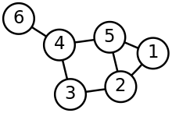

В предыдущем юните мы познакомились с линейными структурами данных, такими как списки, стеки и очереди. Эти структуры организуют данные в последовательном порядке, что удобно для решения многих задач. Однако, существуют задачи, в которых линейные структуры данных неэффективны. Например, представить сеть дорог, которые связывают города между собой различными путями или представить иерархическую структуру организации, где сотрудники подчиняются друг другу.
Для решения таких задач используются нелинейные структуры данных, которые позволяют организовывать данные более сложным образом. В этом юните вы познакомитесь с двумя важными нелинейными структурами данных — Деревья и Графы.
Также в этом юните вы:
- Изучите базовые принципы и терминологию графов и деревьев, включая узлы, ребра, пути, циклы, корни, листья.
- Научитесь реализовывать базовые алгоритмы на графах и деревьях, такие как поиск в глубину и поиск в ширину.
- Познакомитесь со способами представления графов и деревьев в коде.
Для работы с Деревьями необходимо в первую очередь разобраться в терминологии. Сейчас вы можете просто познакомиться с каждым из терминов, а дальше у вас будет возможность поподробнее погрузиться в каждый из них:
- Узел (Node) — это элемент дерева, содержащий данные.
- Корень (Root) — это узел, не имеющий родительского узла.
- Лист (Leaf) — узел, не имеющий дочерних узлов.
- Родительский узел (Parent Node) — тип узла, который имеет дочерние узлы.
- Дочерний узел (Child Node) — тип узла, который имеет родительский узел.
- Ветвь (Branch) — путь от корня до листа.
- Глубина (Depth) — количество узлов на пути от корня до узла.
- Высота (Height) — максимальная глубина дерева.
Перед тем как перейти к применению этих элементов на практике, надо уточнить, что Деревья бывают разных видов. Самый общий случай — это N-арное дерево (N-ary Tree), в котором каждый узел может иметь любое количество дочерних узлов.
Крайне популярным видом является бинарное дерево (Binary Tree), в нем каждый узел может иметь не более двух дочерних узлов. Также частый случай — модификации различных видов, как например бинарное дерево поиска (Binary Search Tree), в нем не просто каждый узел не может иметь больше двух дочерних узлов, но еще и должно выполняться правильно, что значения в левом поддереве узла, всегда меньше значения текущего узла, а в правом — больше.
Давайте начнем с рассмотрения N-арного дерева и реализации его в Python. Первый термин, который следует изучить, — это Узел (Node):
class TreeNode:
def __init__(self, value):
self.value = value
self.children = []
def add_child(self, child):
self.children.append(child)
Итак, наш класс — это представление узла. Конструктор принимает значение, которое будет хранить в атрибуте value, а также создает атрибут children — пустой список, в который вы будете помещать новые узлы.
Следующий термин — это Корень (Root). Вы уже можете его создать, потому что, как вы уже догадались, корнем дерева будет являться его самый первый узел:
root = TreeNode(1)
Пока Дерево выглядит так:
Переходим к следующим понятиям — Лист (Leaf) и Родительский узел (Parent Node).
Как только вы добавили новый узел в Дерево, внесите его в список children для нашего root и создайте новый лист, а root станет родительским узлом:
root = TreeNode(1)
child1 = TreeNode(2)
root.add_child(child1)
При этом новый узел child1 со значением 2 является Дочерним узлом (Child Node).
Для разбора оставшихся терминов нужно усложнить Дерево:
root = TreeNode(1)
child1 = TreeNode(2)
root.add_child(child1)
child2 = TreeNode(3)
root.add_child(child2)
child3 = TreeNode(4)
root.add_child(child3)
child4 = TreeNode(5)
child1.add_child(child4)
Ветвь (Branch) — это путь от Корня до Листа, а раз Лист — это узел, не имеющий дочерних узлов (в нашем случае это узлы со значениями 5, 3 и 4), то в этом примере будет три ветви Дерева:
Следующим понятием будет Глубина (Depth), то есть количество узлов на пути от корня до узла. Глубина корня считается равной 0, а глубина каждого последующего узла равна глубине его родительского узла плюс 1. Поэтому в примере выше глубина узла со значением 5 равна двум.
И, наконец, Высота (Height) — это максимальная глубина дерева. В нашем случае она тоже равна двум, поскольку глубина двух остальных ветвей равна 1.
Где используется структура Дерево
Самый очевидный кейс из реального мира — хранение иерархических данных. В первую очередь то, с чем знаком каждый из нас — это файловая система, но также деревьями можно представлять структуру организаций или, например, родословные.
Также деревья применимы в контексте задачи поиска информации, но для этого используются бинарные деревья. Организуя поиск по такой структуре мы значительно выигрываем по времени. Всё это, конечно, зависит от конкретной постановки задачи.
И, пожалуй, второй по популярности кейс применения деревьев — это деревья решений, где есть некая начальная точка (Корень), которая является вопросом, а Ветви символизируют возможные пути решений. Они тоже в свою очередь представляют собой вопросы, но уже новые, ответив на которые мы дойдем до нужного Листа — решения.
А мы сейчас с вами разберем классическую задачу представления файловой системы компьютера с помощью n-арного дерева.
Реализация файловой системы с помощью N-aрного дерева.
В файловой системе каждая директория (Узел) имеет набор вложенных директорий (Дочерних узлов) и файлов (Листьев).
Вот с чего можно начать:
class TreeNode:
def __init__(self, name):
self.name = name
self.children = []
def add_child(self, child):
self.children.append(child)
root = TreeNode("C:")
Теперь нужно заполнить файловую систему, то есть добавить больше Узлов и Деревьев. Давайте создадим две папки с файлами и один файл положим в корень:
documents = TreeNode("Documents")
root.add_child(documents)
documents.add_child(TreeNode("Homework.docx"))
documents.add_child(TreeNode("Report.docx"))
pictures = TreeNode("Pictures")
root.add_child(pictures)
pictures.add_child(TreeNode("Summer.jpg"))
pictures.add_child(TreeNode("Winter.jpg"))
root.add_child(TreeNode('secret.key'))
Формально, задача решена, так как файловую систему мы интерпретировали. Но самое важное начинается тогда, когда вы начнете с ней взаимодействовать. Первоочередная проблема — это визуализация, решить её поможет следующая функция:
def print_file_system(node, indent=""):
print(indent + node.name + ("/" if (not node.children else "\\"))
if node.children:
for child in node.children:
print_file_system(child, indent + " ")
Функция print_file_system() принимает два аргумента — node, который представляет текущий узел и с которого начинается обход, и indent, который используется для добавления отступов перед именем узла при выводе.
Сначала функция выводит информацию о текущем узле. Здесь indent используется для создания отступа перед именем узла. Если узел является файлом (not node.children — отсутствуют дочерние узлы), используется символ "/" для обозначения файла, в противном случае используется символ "\" для обозначения директории.
Далее функция проверяет, есть ли у текущего узла Дочерние узлы. Это делается с помощью условия if node.children:
- Если у узла есть нет дочерних узлов, обход этой ветви завершается.
- Если же у узла есть дочерние узлы, то функция начинает обход каждого из них. Для этого используется цикл
for child in node.children:.
Внутри цикла для каждого дочернего узла рекурсивно вызывается функция print_file_system(). При этом передается текущий дочерний узел в качестве аргумента node, а также добавляется отступ indent + " ", чтобы текст выводился с отступом относительно родительского узла
Этот процесс продолжается для каждого дочернего узла рекурсивно, пока не будет достигнута конечная точка, то есть узлы без дочерних элементов Листья.
И смотрим на результат:
print_file_system(root)
# C:\
# Documents\
# Homework.docx/
# Report.docx/
# Pictures\
# Summer.jpg/
# Winter.jpg/
# secret.key/
Теперь можно перейти к следующей важной теме — алгоритмы поиска в деревьях.
Существует множество алгоритмов, которые работают с деревьями. Мы же посмотрим на два самых распространенных, которые решают задачу поиска — это алгоритм поиска в глубину (Depth-First Search, DFS), который для обхода дерева посещает сначала все узлы на одной ветви, перед тем как перейти к следующей, и алгоритм поиска в ширину (Breadth-First Search, BFS), который наоборот посещает узлы по уровням, начиная с самого корня и поэтапно спускаясь на уровень ниже.
Вы уже увидели, как обходить дерево, поэтому реализовать алгоритм поиска в глубину для вас не составит труда. Давайте сразу посмотрим на алгоритм, поскольку он похож на функцию визуализации файловой системы:
def depth_first_search_for_file(node, target_file):
if node.name == target_file:
return node
if node.children:
for child in node.children:
result = depth_first_search_for_file(child, target_file)
if result:
return result
return None
Функция depth_first_search_for_file() принимает два аргумента: node, который является текущим узлом для обработки, и target_file, то есть имя файла, который мы ищем в Дереве. Не обязательно указывать root, если вы хотите запустить поиск в определенной папке, но важно понимать, что здесь передается именно объект.
Сначала функция проверяет базовый случай. Если имя текущего узла совпадает с искомым файлом, то файл найден и функция возвращает этот узел:
if node.name == target_file:
return node
Если имя текущего узла не совпадает с искомым файлом, функция проверяет, есть ли у этого узла дети (подузлы). Если есть, она рекурсивно вызывает себя для каждого дочернего файла:
if node.children:
for child in node.children:
result = depth_first_search_for_file(child, target_file)
if result:
return result
При рекурсивном вызове depth_first_search_for_file(child, target_file) мы передаём текущий дочерний узел child в качестве нового текущего узла для обработки.
Если рекурсивный вызов находит искомый файл где-то в поддереве, он возвращает соответствующий узел. В противном случае, если файл не найден в текущем поддереве или в поддеревьях, функция возвращает None.
Получается следующий результат:
found_node = depth_first_search_for_file(root, 'Report.docx')
print(found_node.name) # Report.docx
В текущей реализации возвращается объект класса TreeNode со значением атрибута name, который вы задали при поиске. Именно так решается задача проверки существования файла. Но можно продвинуться дальше и возвращать пользователю путь до этого файла, если он был найден:
def depth_first_search_for_file(node, target_file, current_path=""):
# Обновляем текущий путь, добавляя текущее имя узла
current_path += node.name + "/"
if node.name == target_file:
# Если имя текущего узла совпадает с искомым файлом, возвращаем текущий путь
return current_path
if node.children:
for child in node.children:
# Рекурсивно вызываем функцию для каждого ребенка, передавая текущий путь
result = depth_first_search_for_file(child, target_file, current_path)
if result:
return result
# Если файл не найден в текущем поддереве, возвращаем None
return None
Теперь алгоритм поиска пути до файла через обход в глубину полноценно реализован. Теперь давайте обратим внимание на второй алгоритм — алгоритм поиска в ширину (BFS), который итеративно просматривает все узлы на одном уровне перед переходом к узлам на следующем уровне.
Путь до каждого узла, который вы посещаете, сохраняется. Как только вы обнаружили искомый файл, то сможете проследить путь, который привёл к этому файлу. В этом алгоритме пригодится реализованный ранее класс очереди:
class Queue:
def __init__(self):
self.queue = []
def is_empty(self):
return len(self.queue) == 0
def enqueue(self, item):
self.queue.append(item)
def dequeue(self):
if not self.is_empty():
return self.queue.pop(0)
else:
print("Queue is empty")
return None
Так выглядит сам алгоритм:
def breadth_first_search_for_file(root, target_file):
queue = Queue()
queue.enqueue((root, ""))
while not queue.is_empty():
current_node, current_path = queue.dequeue()
current_path += current_node.name + "/"
if current_node.name == target_file:
return current_path
for child in current_node.children:
queue.enqueue((child, current_path))
return None
Давайте разберем его поэтапно. Создаем экземпляр класса Queue для управления очередью:
queue = Queue()
queue.enqueue((root, ""))
Начать стоит с корневого узла root и добавить его в очередь вместе с пустым путём. Это означает, что вы начинаете обход с корневой директории.
Далее начинайте итерацию по элементам очереди, пока она не окажется пустой. На каждой итерации извлекайте первый элемент из очереди:
current_node, current_path = queue.dequeue()
current_node— это текущий узел.current_path— путь до этого узла.
Затем проверяем, совпадает ли имя текущего узла с искомым именем файла:
if current_node.name == target_file:
return current_path
Если совпадение найдено, возвращайте текущий путь:
for child in current_node.children:
queue.enqueue((child, current_path))
Если текущий узел не содержит искомый файл, добавьте все дочерние узлы текущего узла в очередь для дальнейшего обхода:Так мы добавляем каждый дочерний узел в очередь вместе с обновленным путем current_path, включающим имя текущего узла.
Мы продолжаем этот процесс до тех пор, пока очередь не станет пустой или пока не найдем искомый файл. Если файл найден, возвращаем путь до него, в ином случае вернем None.
Результат будет идентичен предыдущему:
file_path = breadth_first_search_for_file(root, 'Report.docx')
if file_path: # Если файл был найден
print(file_path[:-1])
# C:/Documents/Report.docx
Важно уточнить, что алгоритмов обхода дерева существует несколько, причем для каждого вида деревьев используются свои алгоритмы.Давайте подробнее рассмотрим конкретно наш случай — N-арное дерево и алгоритмы DFS и BFS.
Алгоритм поиска в глубину (DFS) следует использовать, когда вы хотите найти решение как можно быстрее, не беспокоясь об оптимальности пути к целевому узлу. Алгоритм поиска в ширину (BFS) используется, когда вам важно найти кратчайшее, оптимальное решение.
Если требуется найти путь к конкретному файлу в файловой системе без учета кратчайшего пути, алгоритм поиска в глубину может быть предпочтительнее. Однако, если важно найти кратчайший путь к файлу, тогда алгоритм поиска в ширину может быть более подходящим выбором.
Важно учесть еще один момент — описанный выше алгоритм не учитывает ситуацию, когда в файловой системе находится несколько файлов с одинаковым именем. Эту задачу вам нужно будет решить в практический части юнита.

При работе с Графами, как и с Деревьями, тоже важно четко понимать используемую терминологию. Сейчас вы можете ознакомиться с основными терминами в теории Графов, а затем мы перейдем к их освоению на практике:
- Узел (вершина, Node) — элемент графа, представляющий объект.
- Ребро (Edge) — связь между двумя узлами.
- Путь (Path) —последовательность ребер, соединяющих два узла.
- Цикл (Cycle) — путь, который начинается и заканчивается в одном и том же узле.
- Направленный граф (Directed Graph) — граф, в котором ребра имеют направление, указывающее, как можно перемещаться между узлами.
- Ненаправленный граф (Undirected Graph) — граф, в котором ребра не имеют направления.
- Взвешенный граф (Weighted Graph) — граф, в котором ребрам назначены веса (числа), представляющие стоимость или расстояние между узлами.
Способы представления графов
Список смежности (Adjacency List). В этом случае для каждого узла хранится список узлов, с которыми он соединен ребрами:
graph = {
'A': ['B', 'C'],
'B': ['A', 'C', 'D'],
'C': ['A', 'B', 'D'],
'D': ['B', 'C']
}
Каждый ключ в словаре представляет узел графа, а значение для каждого ключа — список смежных узлов.
Преимущество такого представления заключается в эффективном представлении разреженных графов (граф, в котором количество рёбер значительно меньше, чем максимально возможное количество рёбер между вершинами) и экономии памяти, поскольку мы храним информацию только о смежных узлах.
К недостаткам этого способа можно отнести медленное выполнение проверки на существование ребра между двумя узлами.
Матрица смежности (Adjacency Matrix). Матрица, в которой строки и столбцы соответствуют узлам, а значение в ячейке (i, j) указывает, есть ли ребро между узлами i и j.
graph = [
[0, 1, 1, 0],
[1, 0, 1, 1],
[1, 1, 0, 1],
[0, 1, 1, 0]
]
В данном примере каждая строка и каждый столбец матрицы представляют узлы графа. Значение 1 в ячейке указывает на наличие ребра между соответствующими узлами, а значение 0 указывает на его отсутствие.
Здесь наоборот матрица смежности эффективнее представляет плотные графы (количество рёбер близко к максимально возможному количеству рёбер между вершинами), и доступ к проверке существования ребра между двумя узлами осуществляется быстрее.
К недостаткам такого представления можно отнести расход памяти для больших и разреженных графов и неэффективное хранение информации для большого количества узлов в разреженном графе.
Где применяются Графы
На самом деле, Графы применяются в самых ближайших практически для каждого человека сферах. В основе тех же социальных сетей лежат графы, моделирующие взаимосвязи между пользователям. В списках друзей узлы — это конкретные люди, а ребра — связи между ними, например,добавление в друзья, подписки и лайки.
Еще одна сфера — картографические системы и навигация. Современные алгоритмы навигации по крупным городам очень сложны, но если их упростить, то у нас будут пункты назначения (узлы) и пути между ними (ребра). В таких графах можно находить кратчайшие пути от точки А к точке Б, чем мы сегодня с вами и займемся.
К менее общеизвестной сфере применения графов можно отнести биоинформатику, в ней графы помогают исследовать сложные сети взаимосвязей.
Какие алгоритмы можно применять к Графам
- Самый первый алгоритм, который изучают при знакомстве с графами — это Алгоритм Дейкстры, который служит для нахождения кратчайших путей от одного узла до всех остальных узлов во взвешенном графе.
- Но поскольку Алгоритм Дейкстры не совсем универсален (с его ограничениями познакомимся при подробном его рассмотрении), то прибегают и к другим алгоритмам, например Алгоритму Беллмана-Форда, который помогает решать задачу нахождения кратчайших путей в графе с отрицательными весами ребер.
Для практического освоения графов давайте рассмотрим задачу по поиску кратчайшего пути и разберем реализацию алгоритма Дейкстры.
Представьте, что у вас есть карта, на которой отмечены города и дороги между ними. Вы хотите найти кратчайший путь между двумя заданными городами. Сначала вам нужно представить карту в виде графа: города у будут представлены узлами графа, а дороги — ребрами. Если дороги имеют разную длину, можно назначить рёбрам веса, соответствующие их длине.
Теперь можно представить граф с помощью словаря, где ключи — это узлы, а значения — списки смежных узлов. Это будет взвешенный граф, так как дороги имеют длину.
Вы можете использовать словарь, где значения — это словари, сопоставляющие смежные узлы с их весами.
Давайте сравним пример ненаправленного графа, в котором у рёбер нет стоимости поездки, то есть в контексте нашей задачи — длины пути:
graph = {
'A': ['B', 'C'],
'B': ['A', 'D', 'E'],
'C': ['A', 'F'],
'D': ['B'],
'E': ['B', 'F'],
'F': ['C', 'E']
}
А вот пример взвешенного графа, где уже указана стоимость поездки по выбранному пути:
weighted_graph = {
'A': {'B': 5, 'C': 2},
'B': {'A': 5, 'D': 4, 'E': 3},
'C': {'A': 2, 'F': 7},
'D': {'B': 4},
'E': {'B': 3, 'F': 6},
'F': {'C': 7, 'E': 6}
}
По такому словарю достаточно трудно визуализировать эту задачу, поэтому давайте посмотрим на пример кода, который позволяет визуализировать графы при помощи библиотек networkx и matplotlib:
import networkx as nx
import matplotlib.pyplot as plt
weighted_graph = {
'A': {'B': 5, 'C': 2},
'B': {'A': 5, 'D': 4, 'E': 3},
'C': {'A': 2, 'F': 7},
'D': {'B': 4},
'E': {'B': 3, 'F': 6},
'F': {'C': 7, 'E': 6}
}
# Создаем направленный граф
G = nx.DiGraph()
# Добавляем узлы и ребра в граф
for node, edges in weighted_graph.items():
G.add_node(node)
for neighbor, weight in edges.items():
G.add_edge(node, neighbor, weight=weight)
pos = nx.spring_layout(G)
nx.draw(G, pos, with_labels=True, node_size=1000, node_color='lightblue', font_size=12, font_weight='bold')
labels = nx.get_edge_attributes(G, 'weight')
nx.draw_networkx_edge_labels(G, pos, edge_labels=labels)
plt.show()
Так будет выглядеть результат:
Теперь ваша задача — реализовать такую программу, которая находила бы кратчайший путь из одного узла графа в другой. В этом поможет алгоритм Дейкстры, как раз созданный для нахождения кратчайших путей от одного узла (источника) до всех остальных узлов во взвешенном графе. Реализовав такой алгоритм, вам останется только выбрать кратчайший путь до нужного узла.
1. Инициализация. Установить начальную вершину и расстояние до нее как 0, а до всех остальных вершин как бесконечность. Создать пустое множество для хранения вершин, которые еще не были посещены.
2. Выбор вершины. Из всех непосещенных вершин выбрать ту, расстояние до которой будет наименьшим.
3. Обновление расстояний. Для каждой смежной вершины, которая еще не посещена, вычислить новое расстояние как сумму расстояния до текущей вершины и веса ребра до смежной вершины. Если новое расстояние меньше, чем текущее, обновить расстояние.
4. Отметка вершины, как посещенной. После обновления расстояний для всех смежных вершин пометить текущую вершину как посещенную и исключить ее из множества непосещенных вершин.
5. Повтор. Повторить шаги 2-4, пока все вершины не будут посещены.
Теперь самое сложное — реализация. Начинаем с инициализации:
from collections import defaultdict
def dijkstra(graph, source):
distances = defaultdict(lambda: float('inf')) # Создаем словарь для хранения расстояний до каждой вершины
previous = {} # Словарь для хранения предыдущей вершины на пути к каждой вершине
unvisited = set(graph.keys()) # Множество непосещенных вершин
distances[source] = 0 # Устанавливаем расстояние до начальной вершины как 0
Первое пояснение — алгоритм принимает weighted_graph и имя узла, от которого мы будем искать кратчайшие пути до всех узлов:
distances, previous = dijkstra(weighted_graph, 'D')
С previous и unvisited всё более или менее очевидно, но вот с defaultdictt лучше разобраться.
defaultdict — это подкласс словаря из модуля collections, который предоставляет удобный способ создания словаря с заданным значением по умолчанию для каждого ключа. В данном контексте defaultdict используется для хранения расстояний от начальной вершины до всех остальных вершин графа.В коде используется defaultdict вместе с лямбда-функцией, которая возвращает float('inf'), то есть положительную бесконечность. Это означает, что изначально все расстояния до вершин, кроме начальной, устанавливаются как бесконечность, потому что мы еще не знаем реальных расстояний до них. Бесконечность выбирается для того, чтобы в начале алгоритма они были неопределенными и постепенно уточнялись в процессе выполнения алгоритма.
В алгоритме Дейкстры используется значение бесконечности ('inf'), чтобы инициализировать расстояния до всех вершин, кроме начальной, перед тем как алгоритм начнет обновлять их на основе фактических расстояний. Когда алгоритм обнаруживает новый кратчайший путь к вершине, он обновляет ее расстояние в словаре расстояний (distances).
Использование defaultdict(lambda: float('inf')) позволяет избежать проверки наличия ключей в словаре при каждом обновлении расстояний. Если ключ отсутствует, defaultdict автоматически создает новую запись с указанным значением по умолчанию, в данном случае float('inf'), что делает код более компактным и читаемым.
Продолжаем разработку алгоритма:
def dijkstra(graph, source):
distances = defaultdict(lambda: float('inf')) # Создаем словарь для хранения расстояний до каждой вершины
previous = {} # Словарь для хранения предыдущей вершины на пути к каждой вершине
unvisited = set(graph.keys()) # Множество непосещенных вершин
distances[source] = 0 # Устанавливаем расстояние до начальной вершины как 0
while unvisited:
current_node = min(unvisited, key=lambda node: distances.get(node, float(
'inf')))
unvisited.remove(current_node)
Алгоритм while unvisited: будет работать до тех пор, пока существуют непосещенные вершины. Для начала нужно выбрать вершину с наименьшим расстоянием:
current_node = min(unvisited, key=lambda node: distances.get(node, float('inf')))
unvisited — это множество непосещенных вершин. На каждой итерации алгоритма оно содержит только те вершины, которые еще не были посещены.Вторым аргументом будет критерий сравнения вершин между собой — key=lambda node: distances.get(node, float('inf')).
Здесь используется лямбда-функция, которая принимает вершину node и возвращает расстояние от начальной вершины до этой вершины. Если расстояние до вершины не определено (то есть вершина еще не была посещена и нет соответствующей записи в словаре distances), мы возвращаем бесконечность float('inf'). Это гарантирует, что непосещенные вершины будут иметь наименьший приоритет при выборе следующей вершины для посещения.
Сам вызов функции min(unvisited, key= возвращает минимальный элемент из непосещенных вершин unvisited, используя критерий, определенный в key, для определения порядка сравнения. Таким образом, алгоритм выбирает вершину с наименьшим расстоянием от начальной вершины.
current_node = min(unvisited, key=lambda node: distances.get(node, float('inf'))) на каждой итерации выбирает вершину с наименьшим текущим расстоянием от начальной вершины, учитывая, что непосещенные вершины имеют приоритет над уже посещенными, и вершины без определенного расстояния считаются как имеющие бесконечное расстояние.Теперь нужно отметить вершину, как посещенную:
unvisited.remove(current_node)
Наконец, финальная часть алгоритма:
def dijkstra(graph, source):
distances = defaultdict(lambda: float('inf')) # Создаем словарь для хранения расстояний до каждой вершины
previous = {} # Словарь для хранения предыдущей вершины на пути к каждой вершине
unvisited = set(graph.keys()) # Множество непосещенных вершин
distances[source] = 0 # Устанавливаем расстояние до начальной вершины как 0
while unvisited: # Пока есть непосещенные вершины
current_node = min(unvisited, key=lambda node: distances.get(node, float(
'inf'))) # Выбираем вершину с наименьшим расстоянием
unvisited.remove(current_node) # Помечаем вершину как посещенную
# Финальная часть алгоритма:
for neighbor, weight in graph[current_node].items():
new_distance = distances[current_node] + weight
if new_distance < distances[neighbor]:
distances[neighbor] = new_distance
previous[
neighbor] = current_node
return distances, previous
Для каждой смежной вершины:
for neighbor, weight in graph[current_node].items()
Вычисляется новое расстояние:
new_distance = distances[current_node] + weight
И если новое расстояние меньше текущего:
if new_distance < distances[neighbor]:
То обновите расстояние и установите текущую вершину, как предыдущую на пути к смежной вершине:
distances[neighbor] = new_distance
previous[neighbor] = current_node
Дальше возвращаем словарь расстояний и словарь предыдущих вершин:
return distances, previous
Итоговая функция будет выглядеть так:
from collections import defaultdict
def dijkstra(graph, source):
distances = defaultdict(lambda: float('inf'))
previous = {}
unvisited = set(graph.keys())
distances[source] = 0
while unvisited: # Пока есть непосещенные вершины
current_node = min(unvisited, key=lambda node: distances.get(node, float(
'inf')))
unvisited.remove(current_node)
# Финальная часть алгоритма:
for neighbor, weight in graph[current_node].items():
new_distance = distances[current_node] + weight
if new_distance < distances[neighbor]:
distances[neighbor] = new_distance
previous[
neighbor] = current_node
return distances, previous
Пробуйте применить алгоритм к нашему графу:
weighted_graph = {
'A': {'B': 5, 'C': 2},
'B': {'A': 5, 'D': 4, 'E': 3},
'C': {'A': 2, 'F': 7},
'D': {'B': 4},
'E': {'B': 3, 'F': 6},
'F': {'C': 7, 'E': 6}
}
# Находим кратчайшие пути от узла 'D'
distances, previous = dijkstra(weighted_graph, 'D')
print(distances)
# defaultdict(<function dijkstra.<locals>.<lambda> at 0x0000019924F4FBA0>,
# {'D': 0,
# 'B': 4,
# 'A': 9,
# 'E': 7,
# 'F': 13,
# 'C': 11})
print(previous) # {'B': 'D', 'A': 'B', 'E': 'B', 'F': 'E', 'C': 'A'}
На данном этапе, выход алгоритма не совсем очевидно-читаем, поэтому важно пояснить:
Словарь distances содержит кратчайшие расстояния от начальной вершины (в данном случае от вершины 'D') до всех остальных вершин в графе. Ключи словаря — это вершины графа, а значения — расстояния от начальной вершины до соответствующей вершины.
То есть 'D': 0 говорит о том, что расстояние от вершины 'D' до самой себя (начальная вершина) равно 0, затем 'B': 4 значит, что кратчайшее расстояние от вершины 'D' до вершины 'B' равно 4, и так далее.
Словарь previous содержит информацию о предыдущей вершине на пути к каждой вершине. Ключи словаря — это вершины графа, а значения — предыдущие вершины на кратчайшем пути от начальной вершины до соответствующей вершины.
В нашем примере словарь previous говорит:'B': 'D', это значит, что предыдущая вершина на кратчайшем пути от 'D' до 'B' — 'D'. Затем 'A': 'B' значит, что предыдущая вершина на кратчайшем пути от 'D' до 'A' — 'B' и так далее.
Делаем вывод:
- из вершины 'D' самый короткий путь к вершине 'B' проходит через вершину 'D';
- к вершине 'A' — через вершину 'B';
- к вершине 'E' — также через вершину 'B';
- к вершине 'F' — через вершину 'E';
- к вершине 'C' — через вершину 'A'.
Теперь можно найти кратчайший путь:
def get_shortest_path(previous, source, target):
path = [target] # Начинаем с целевой вершины
while path[-1] != source: # Пока не достигнем начальной вершины
path.append(previous[path[-1]]) # Добавляем предыдущую вершину на путь к текущей вершине
path.reverse() # Переворачиваем список, чтобы путь был от начальной вершины к целевой
return path
Смотрим на результат:
weighted_graph = {
'A': {'B': 5, 'C': 2},
'B': {'A': 5, 'D': 4, 'E': 3},
'C': {'A': 2, 'F': 7},
'D': {'B': 4},
'E': {'B': 3, 'F': 6},
'F': {'C': 7, 'E': 6}
}
# Находим кратчайшие пути от узла 'D'
distances, previous = dijkstra(weighted_graph, 'D')
# Выводим кратчайший путь от 'D' до 'F'
path = get_shortest_path(previous, 'D', 'F')
print(f"Кратчайший путь от D до F: {path}")
# Кратчайший путь от D до F: ['D', 'B', 'E', 'F']
Повторив эти действия, вы успешно справитесь с поставленной задачей. Давайте теперь сделаем для себя некоторые выводы.
Во-первых, он не может работать с отрицательными весами ребер. Алгоритм Дейкстры предполагает, что все веса ребер неотрицательны. Если в графе есть ребра с отрицательными весами, алгоритм Дейкстры может не найти кратчайший путь. (В этом случае можно использовать алгоритм Беллмана-Форда).
Во вторых, проблема в его сложности. Временная сложность алгоритма Дейкстры зависит от реализации. В наихудшем случае, когда граф представлен матрицей смежности, сложность алгоритма составляет O(V2), где V — количество узлов в графе. Если граф представлен списком смежности, сложность алгоритма может быть снижена до O(E log V), где E — количество ребер в графе.
Когда алгоритм Дейкстры перестает быть эффективным
Как упоминалось выше, сложность алгоритма Дейкстры в наихудшем случае составляет O(V2). Это означает, что время выполнения алгоритма может значительно увеличиться с ростом количества узлов и ребер в графе, то есть в графах с большим количеством узлов и ребер.
Также его эффективность снижается в плотно связанных графах, когда каждый узел соединен с большим количеством других узлов. Это может привести к тому, что алгоритм Дейкстры будет выполнять много ненужных вычислений, что значительно снизит его эффективность.
Какие есть альтернативы
Существуют и другие алгоритмы для нахождения кратчайших путей в графах, которые могут быть более эффективными в определенных ситуациях.
Как упоминалось ранее, алгоритм алгоритм Беллмана-Форда может работать с графами, содержащими ребра с отрицательными весами. Если нужно найти кратчайшие пути между всеми парами узлов в графе, берите алгоритм Флойда-Уоршелла.
Также существует еще один специфичный алгоритм А-везда, который использует эвристическую функцию для оценки расстояния до целевого узла, что может помочь в ускорении поиска кратчайшего пути.
Из этого можно сделать вывод, что Алгоритм Дейкстры — это достаточно эффективный инструмент для нахождения кратчайших путей в относительно простых Графах. Важно понимать его ограничения и знать, когда он перестает быть эффективным. В этом случае разумно будет прибегнуть к другим алгоритмам, которые в вашей ситуации могут оказаться более предпочтительными.
В этом юните вы погрузились в мир нелинейных структур данных, изучив две фундаментальные структуры: Деревья и Графы.
- Вы узнали, что основные компоненты Деревьев — это узлы, корень, листья, ветви, также ему свойственны такие характеристики, как глубина и высота.
- Вы реализовали N-арное дерево и рассмотрели два алгоритма поиска в Деревьях:
- Поиск в глубину (DFS) — рекурсивный алгоритм, который исследует дерево, углубляясь в каждую ветвь до самого конца.
- Поиск в ширину (BFS) — итеративный алгоритм, который посещает узлы по уровням, начиная с корня.
- Вы изучили Графы и их основные элементы: узлы (вершины) и ребра (связи между узлами).
- Также вы рассмотрели два способа представления графов:
- Список смежности, который хранит список смежных узлов для каждого узла.
- Матрица смежности, где значение в ячейке (i, j) указывает на наличие ребра между узлами i и j.
- Далее вы реализовали алгоритм Дейкстры для поиска кратчайших путей в графах и обсудили его ограничения.
Изучение графов и деревьев — это обширная область, и в этом юните вы рассмотрели только основы.
Например, среди структур Дерево есть множество полезных алгоритмов, таких как:
- сортировка с помощью двоичного дерева, которая позволяет эффективно упорядочивать данные;
- алгоритм А-звезда, помогающий находить наиболее оптимальный путь.
Не менее важны и алгоритмы балансировки деревьев, вроде AVL-деревьев или красно-черных деревьев, которые гарантируют эффективность операций поиска, вставки и удаления.
Что касается графов, то здесь вас ждут интересные алгоритмы поиска минимального остовного дерева, такие как:
- алгоритмы Краскала и Прима, обеспечивающие поиск минимального набора рёбер, соединяющих все вершины графа без циклов;
- алгоритмы Беллмана-Форда или Флойда-Уоршелла, которые открывают эффективные способы нахождения самого короткого пути между узлами.
Кроме того, важную роль играют алгоритмы потоков в сетях, включая алгоритм Форда-Фалкерсона, который помогает решать задачи оптимизации потоков.
Понимание графов и деревьев и умение применять к ним алгоритмы — это ценные навыки для любого разработчика, который хочет создавать эффективные и оптимизированные программы в контексте самых разнообразных областей.
Как мы уже выяснили, текущий алгоритм поиска в ширину файла в N-арном дереве файловой системы не учитывает ситуацию, когда в системе может быть несколько файлов с одним и тем же именем. Для решения этой проблемы вам предлагается модифицировать алгоритм таким образом, чтобы он возвращал все пути к файлам с заданным именем.
Текущий алгоритм:
def breadth_first_search_for_file(root, target_file):
# Создаем очередь для обхода в ширину
queue = Queue()
queue.enqueue((root, ""))
while not queue.is_empty():
current_node, current_path = queue.dequeue()
# Обновляем текущий путь, добавляя текущее имя узла
current_path += current_node.name + "/"
if current_node.name == target_file:
# Если текущий узел содержит искомый файл, возвращаем текущий путь
return current_path
# Добавляем детей текущего узла в очередь для дальнейшего обхода
for child in current_node.children:
queue.enqueue((child, current_path))
# Если файл не найден в дереве, возвращаем None
return None
Подсказки
Во-первых, вам нужно поменять саму цель алгоритма, и вместо возврата только одного пути к файлу, алгоритм должен возвращать список путей ко всем файлам с указанным именем.
Во-вторых, вам необходимо изменить алгоритм поиска таким образом, чтобы он продолжал добавлять пути к файлам с заданным именем в список вместо возврата первого найденного пути. Это потребует модификации условия проверки на совпадение и добавления найденного пути к файлу в список.
Пример работы:
root = TreeNode("C:")
root.add_child(TreeNode("Summary.docx"))
documents = TreeNode("Documents")
root.add_child(documents)
documents.add_child(TreeNode("Homework.docx"))
documents.add_child(TreeNode("Report.docx"))
documents.add_child(TreeNode("Summary.docx"))
pictures = TreeNode("Pictures")
root.add_child(pictures)
pictures.add_child(TreeNode("Summer.jpg"))
pictures.add_child(TreeNode("Winter.jpg"))
pictures.add_child(TreeNode("Summary.docx"))
file_paths = breadth_first_search_for_files(root, 'Summary.docx')
for file_path in file_paths:
print(file_path[:-1])
# C:/Summary.docx
# C:/Documents/Summary.docx
# C:/Pictures/Summary.docx
Решение:
def breadth_first_search_for_files(root, target_file):
# Создаем очередь для обхода в ширину
queue = Queue()
queue.enqueue((root, ""))
paths = [] # Список для хранения путей к файлам
while not queue.is_empty():
current_node, current_path = queue.dequeue()
# Обновляем текущий путь, добавляя текущее имя узла
current_path += current_node.name + "/"
if current_node.name == target_file:
# Если текущий узел содержит искомый файл, добавляем путь в список путей
paths.append(current_path)
# Добавляем детей текущего узла в очередь для дальнейшего обхода
for child in current_node.children:
queue.enqueue((child, current_path))
return paths if paths else None